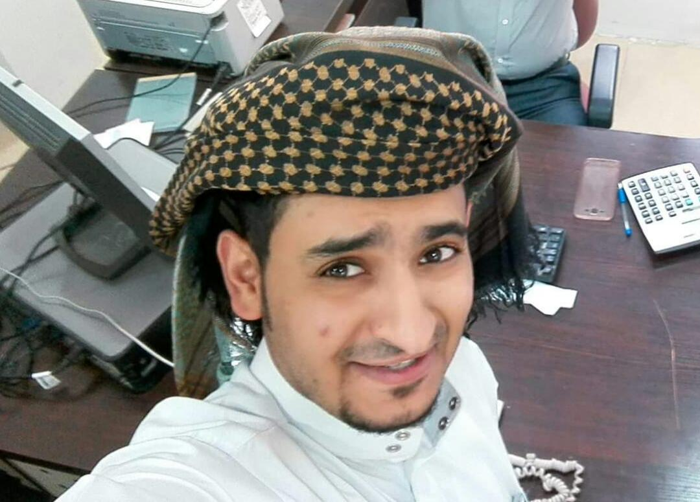

About Us
The White Crescent Foundation for Development and Human Rights is a non-profit civil society organization, established in March 2018 with the license of the Ministry of Social Affairs and Labor, Secretariat of the Capital-Republic of Yemen.
It is a development, human rights, social and cultural institution that serves the community and strengthens it in all fields including skills development and enhancement in highlightinh the role of the community.
Our Mission
To provide life-saving, life-enhancing and life-enriching humanitarian aid to Yemen's people regardless of faith or nationality.
Our Vision
We seek to build human beings and develop society in accordance with sustainable development and human rights standards to contribute in providing better conditions for society, and to work on all segments of society throughout our programs.
Guiding Principles
WCFYE is focused entirely on working towards alleviating the suffering of Yemen and its people.
WCFYE believes that our shared humanity compels us to help the ordinary people of Yemen, regardless of circumstances.
WCFYE aims to provide aid to all the people of Yemen irrespective of any religious, political or geographical affilitation.
Our Team
Meet the people who turn your compassion into hope through humanitarian aid for people in need

Founder
Haitham Alabsi
UK Representative
Ilya Obretetskiy